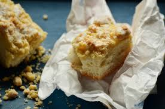

Streuselkuchen
Home

Description
This German crumb cake gets its name from its streusel topping. It has a mild flavor and a
delightfully dense and buttery texture.
Ingredients
Dough
- 500g all-purpose flour
- 7g dry yeast
- 250mL (lukewarm) milk
- 100g butter (softened)
- 75g sugar
- 1 medium-sized egg
- 1tsp salt (leveled)
- zest from 1/2 lemon, or lemon extract
Filling options (optional, options may be mixed)
- apples, sliced
- sour cherries, pitted
- rhubarb, cut into 3cm pieces
- damson plums, pitted and quartered
- lemon juice (optional)
- sugar
- ground cinnamon
Streusel topping
- 200g all-purpose flour
- 150g sugar
- 150g butter, melted
- 100g almonds, chopped (optional)
- 2 pinches ground cinnamon (or vanillin)
- pinch salt
Steps
Dough
- Mix flour, yeast, sugar, and lemon peel. Add extract to milk, if using. Microwave
milk and butter together until bowl is warm to the touch.
- Add liquid mixture and egg to dough. Knead until smooth.The dough should loose itself
from the bowl and become one large clump.
- Cover bowl with a dampened kitchen towel and let rise in a warm, draft-free place until
significantly larger in size, about one hour.
- Briefly knead dough and spread evenly on a prepared baking sheet. Let rise again for a
few more minutes.
Filling (if desired)
Spread evenly on dough. Drizzle apples with lemon juice. Rhubarb may be sweetened with sugar
prior to baking.
Streusel topping
Mix flour, sugar, and almonds if desired with a fork. Continue stirring while slowly
adding butter to form streusel. Fingers may be used to help clump pieces together.
Bake
Preheat oven to 392-428 degrees F (200-220 degrees C). Bake for 25-35 minutes, sprinkling
damson plums with cinnamon sugar 15 minutes in. Baket time may be longer if filling is moist.
Cake is done when edges are golden brown and a toothpick inserted into the center comes
out clean.
Source